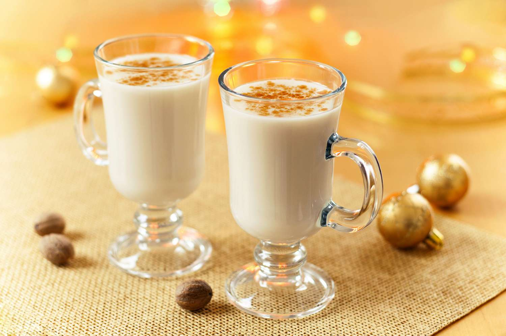

KOGIEL-MOGIEL RECIPE

INGREDIENTS
OTHER RECIPES
- Next repice
-
Lilia Schwab
- Previous recipe
-
Jos Mark Mónzon Mai
RECIPE
- Take 2 eggs and break them into a medium-sized bowl.
- Add 10 tablespoons of sugar to the bowl.
- Take a wisk or a handmixer and start whipping the
mixture until thick and fluffy.
- Assemble the mixture into your glass of liking and
serve with a spoon.
- Enjoy!
Made by Jacqueline Otta :D